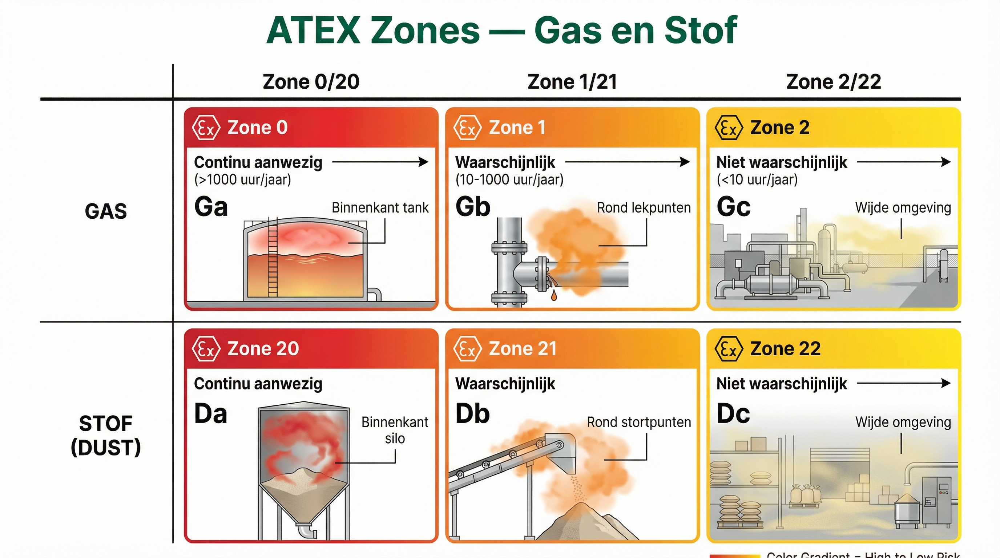
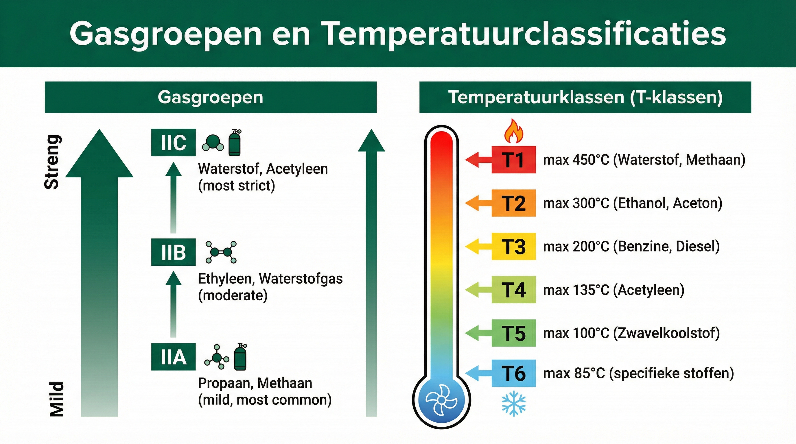
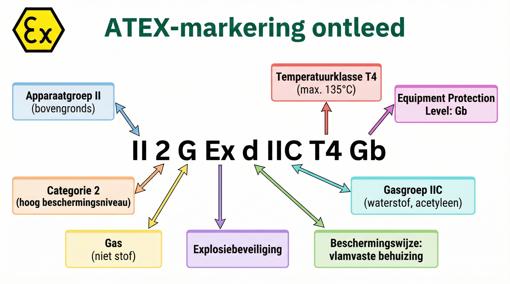

ANA – Module 1
Tijdens routineonderhoud in een installatie in de Botlek ontstond een vonk in een Zone 1-gebied. De oorzaak: een apparaat zonder juiste ATEX-certificering. Gelukkig was de omgeving op dat moment vrij van brandbare dampen. Dit voorbeeld laat zien waarom kennis van ATEX-richtlijnen letterlijk van levensbelang is.

📊 ATEX-zones overzicht (gas + stof)
3.1 Introductie
In industriële omgevingen waar gevaarlijke stoffen zoals brandbare gassen of stofwolken aanwezig zijn, bestaat het risico op explosies. Dit hoofdstuk behandelt hoe ATEX-zonering wordt gebruikt om risico's te classificeren en hoe apparatuur veilig wordt geïnstalleerd en onderhouden in deze gebieden. ATEX staat voor ATmosphères EXplosibles, een Europese richtlijn voor veiligheid in explosiegevaarlijke zones.
Om de inhoud tastbaar te maken, wordt een praktijkvoorbeeld van een zuurstofsensor in een raffinaderij gebruikt. Dit laat zien hoe theorie in de praktijk wordt toegepast.
3.2 Leerdoelen
Na het afronden van dit hoofdstuk kunnen studenten:
- De verschillen tussen ATEX-zones en niet gezoneerd gebied.
- De risico's benoemen, evenals gasgroepen en temperatuurclassificaties.
- ATEX-markeringen op apparatuur interpreteren en uitleggen.
- Uitleggen hoe apparatuur in explosiegevaarlijke omgevingen veilig wordt geïnstalleerd en onderhouden.
- Gevaren en de noodzaak van correct onderhoud in ATEX-zones begrijpen.
3.3 ATEX-zonering
📷 M1-H3-foto-16: ATEX-zone markering in het veld
ATEX-zone bord of markering op grond/wand
ATEX-zonering is bedoeld om omgevingen in kaart te brengen waar explosiegevaar aanwezig kan zijn. Deze classificatie helpt om risico's te minimaliseren en de juiste apparatuur te kiezen die veilig in dergelijke omgevingen kan worden ingezet. De zonering wordt bepaald door twee factoren:
- De frequentie en duur van explosieve atmosferen.
- Het type gevaarlijke stof (gas of stof) en de eigenschappen ervan.
Explosieve atmosferen ontstaan wanneer brandbare gassen, dampen, nevels of stofdeeltjes in de lucht een mengsel vormen dat kan ontbranden bij contact met een ontstekingsbron.
De zones en hun definities — Gas
ATEX-richtlijnen onderscheiden drie zones op basis van de aanwezigheid van explosieve atmosferen. De zones lopen van permanent gevaarlijk (Zone 0) tot een verwaarloosbaar risico in een niet-gezoneerd gebied. Dit is van toepassing op gas- en dampomgevingen (G).
Zone 0 (Gas)
- Definitie: Explosieve atmosfeer permanent, voortdurend of langdurig aanwezig (>1000 uur per jaar).
- Voorbeeld: Binnenin een opslagtank voor oplosmiddelen of ethanol die voortdurend gevuld is met brandbare dampen.
- Uitdagingen: Apparatuur moet volledig explosieveilig zijn (bijvoorbeeld "Ex ia" markering, bestand tegen interne vonken).
- Toepassingen: Gasdetectieapparatuur en meetinstrumenten die continu werken binnenin de tank.
Zone 1 (Gas)
- Definitie: Onder normale omstandigheden kan regelmatig een explosieve atmosfeer voorkomen (10-1000 uur per jaar).
- Voorbeeld: Op het dak of in de tankput van een tank met brandbaar product.
- Uitdagingen: Apparatuur moet explosieveilig zijn en geen vonken of hoge temperaturen veroorzaken (bijvoorbeeld "Ex d" of "Ex e"-behuizingen).
- Toepassingen: Zuurstof- of CO₂-sensoren en afsluiters in leidingen.
Zone 2 (Gas)
- Definitie: Normaal gesproken geen explosieve atmosfeer; incidenteel en van korte duur (<10 uur per jaar), bijvoorbeeld door lekkages.
- Voorbeeld: Gebieden rondom procesinstallaties waar brandbare producten worden verwerkt, zoals bij pompen, afsluiters of flenzen.
- Uitdagingen: Apparatuur mag geen ontstekingsbron zijn, maar de eisen zijn minder streng (bijvoorbeeld "Ex n" voor niet-vonkenvormend materiaal).
- Toepassingen: Het overgrote deel van E/I/A-apparatuur en lichtarmaturen in de buurt van leidingen.
Niet gezoneerd
- Definitie: Geen explosieve atmosfeer; de kans op brandbare gassen of dampen is verwaarloosbaar.
- Voorbeeld: Controlekamers, ruimtes met DCS-systemen, elektrische substations op veilige afstand van procesinstallaties.
- Uitdagingen: De veilige overgang waarborgen tussen Ex-gecertificeerde apparatuur in zones en standaard apparatuur in niet-gezoneerde gebieden.
- Toepassingen: Signaalbarriers tussen explosiegevaarlijke zones en veilige zones beperken energieoverdracht en voorkomen vonkvorming.
De zones en hun definities — Stof
Naast gasexplosies vormt ook brandbaar stof een significant explosiegevaar in industriële omgevingen. Stofexplosies kunnen zelfs krachtiger zijn dan gasexplosies en hebben in het verleden tot ernstige ongevallen geleid. ATEX-richtlijnen onderscheiden daarom ook drie zones voor stofomgevingen (aangeduid met 'D' van 'Dust'). Voor stof is belangrijk te weten dat niet alleen zwevend stof gevaarlijk is — ook stoflagen kunnen opwervelen of zelf ontbranden en zo een primaire brand veroorzaken die overgaat in een stofexplosie. Adequate bescherming vereist daarom apparatuur die zowel tegen indringing van stof beschermd is als geen ontstekingsbron kan vormen.
Zone 20 (Stof)
- Definitie: Wolk brandbaar stof in lucht is permanent, langdurig of frequent aanwezig (>1000 uur per jaar).
- Voorbeeld: Inwendige van stofverzamelaars, silo's, cyclonen, filters of pneumatische transportsystemen in graanmolens, houtbewerking of poedermetaalindustrie.
- Uitdagingen: Apparatuur moet de hoogste veiligheidseisen aankunnen en bestand zijn tegen langdurige blootstelling aan stof (zoals "Ex ia" of "Ex ta").
- Toepassingen: Speciale niveausensoren, temperatuursensoren en druksensoren die volledig stofbestendig zijn.
Zone 21 (Stof)
- Definitie: Bij normale werking is af en toe een wolk brandbaar stof aanwezig (10-1000 uur per jaar).
- Voorbeeld: Vulstations, stortpunten of open transportbanden in verwerkingsinstallaties voor graan, hout, kunststof of kolen.
- Uitdagingen: Apparatuur moet stofdicht zijn (IP6X) en geen ontstekingsbron vormen (zoals "Ex tb").
- Toepassingen: Schakelkasten, motoren, verlichting en bedieningselementen in stofrijke omgevingen zoals meelfabrieken of houtverwerking.
Zone 22 (Stof)
- Definitie: Bij normale werking waarschijnlijk geen wolk brandbaar stof; als deze voorkomt, slechts kort (<10 uur per jaar).
- Voorbeeld: Gebieden rondom zaagmachines, polijststations of verpakkingslijnen waar incidenteel stofwolken kunnen ontstaan.
- Uitdagingen: Bescherming tegen stof (minimaal IP5X) en geen risico op ontsteking, ook bij incidentele stofexpositie (zoals "Ex tc").
- Toepassingen: Standaardapparatuur met extra stofbescherming, zoals lichtarmaturen, bedieningspanelen en junction boxes in licht-stoffige omgevingen.
💬 Check bij je BPV-bedrijf: Kun jij op een areaclassificatie tekening een Zone 0, 1 of 2 aanwijzen? Waar zit het grootste risico, en hoe herken je dat aan de omgeving?
📷 M1-H3-foto-18: Areaclassificatie tekening (optioneel)
Fragment van areaclassificatie tekening met ATEX-zones
Gasgroepen
ATEX deelt brandbare gassen en dampen in groepen in, afhankelijk van hun explosieve eigenschappen. Dit bepaalt welke apparatuur in welke situatie gebruikt mag worden.
Groep IIA
Gassen met een relatief lage ontvlambaarheid of hoge ontstekingsenergie Voorbeelden: propaan, butaan. Apparatuur voor deze groep vereist minder strikte eisen.
Groep IIB
Gassen met een gemiddelde ontstekingsenergie. Voorbeelden: etheen, stadsgas. Apparatuur voor deze groep moet aan strengere eisen voldoen.
Groep IIC
Gassen met de laagste ontstekingsenergie en risico's. Voorbeelden: waterstof, acetyleen. Apparatuur voor groep IIC heeft de hoogste explosieveiligheidseisen en is vaak geschikt voor alle groepen (IIA en IIB).

📊 Gasgroepen en temperatuurclassificaties
Praktische Tip: Voor de eerste installatie en bij aanpassingen: Controleer altijd de markering van apparatuur om te bepalen voor welke gasgroep deze geschikt is.
Welke gasgroep vereist de strengste explosieveiligheidsmaatregelen?
A) IIA
B) IIB
C) IIC
D) IID
Temperatuurclassificaties (T-klassen)
Brandbare stoffen ontbranden bij specifieke temperaturen. De temperatuurklasse van apparatuur geeft de maximale oppervlaktetemperatuur aan, zodat ontbranding van omgevingsgassen of dampen wordt voorkomen.
- T1: Max. oppervlaktetemperatuur ≤450°C (voorbeeld: methaan).
- T2: Max. oppervlaktetemperatuur ≤300°C (voorbeeld: aceton).
- T3: Max. oppervlaktetemperatuur ≤200°C (voorbeeld: benzine).
- T4: Max. oppervlaktetemperatuur ≤135°C (*voorbeeld: ethyleenoxide*).
- T5: Max. oppervlaktetemperatuur ≤100°C (voorbeeld: amylacetaat).
- T6: Max. oppervlaktetemperatuur ≤85°C (*voorbeeld: koolstofdisulfide*).
Opmerking: Apparatuur in T6-klassen wordt vaak gebruikt in zeer gevoelige omgevingen waar een zeer lage oppervlaktetemperatuur vereist is, zoals bij opslag van zwavelwaterstof.
📖 Praktijkvoorbeeld
Een gasdetector wordt geplaatst in Zone 1 en moet voldoen aan de volgende specificaties:
- Geschikt zijn voor Groep IIB (omdat ethyleenoxide aanwezig kan zijn).
- Een T4-classificatie hebben, omdat de omgevingstemperatuur niet hoger dan 135°C mag zijn.
Wat betekent de temperatuurklasse T6 bij ATEX-apparatuur?
A) Max. oppervlaktetemperatuur 85°C
B) Uitsluitend voor gebruik in koele omgevingen
C) Minimale ontbrandingstemperatuur van 450°C
D) Temperatuur is variabel
Wat bepaalt de zone-classificatie?
De classificatie van een ATEX-zone wordt bepaald door verschillende factoren, zoals:
- Type stof: Is de atmosfeer gasvormig (zoals methaan) of stof (zoals maïsstof)?
- Frequentie van voorkomen: Hoe vaak ontstaat een explosieve atmosfeer?
- Ventilatie: Slechte ventilatie verhoogt het risico dat een explosief mengsel zich ophoopt.
Voorbeeld: In een opslagtank voor ethanol wordt Zone 0 aangehouden, omdat brandbare dampen voortdurend aanwezig zijn. Een analyserhuis waar mogelijk lekkages van brandbare gassen kunnen optreden wordt Zone 2.
Wat is de juiste beschrijving van Zone 0?
A) Explosieve atmosfeer is zelden aanwezig
B) Explosieve atmosfeer kan incidenteel voorkomen
C) Explosieve atmosfeer is langdurig of continu aanwezig
D) Er is geen explosiegevaar
3.4 ATEX-markeringen op apparatuur
📷 M1-H3-foto-17: ATEX-markering op apparatuur (close-up)
Close-up ATEX-typeplaatje op apparaat
ATEX-markeringen zijn van cruciaal belang om apparatuur correct te selecteren en veilig te gebruiken in explosiegevaarlijke omgevingen. De markeringen bevatten informatie over de veiligheidskenmerken van een apparaat, zoals de geschiktheid voor een specifieke zone, het type gevaarlijke stof waarmee het werkt en de maximale oppervlaktetemperatuur. Door deze markeringen te begrijpen, kunnen technici bepalen of apparatuur voldoet aan de eisen van de werkomgeving.

📊 ATEX-markering ontleed
De opbouw van een ATEX-markering
Een typische ATEX-markering ziet er als volgt uit:
II 2 G Ex d IIC T4 Gb
Hieronder een uitleg van elk onderdeel:
II — Doelmarkt
Geeft aan dat het apparaat bedoeld is voor gebruik buiten de mijnbouwindustrie.
- I: Apparatuur bedoeld voor mijnbouw.
- II: Apparatuur bedoeld voor andere industrieën (bijvoorbeeld petrochemie, farmacie, voedselverwerking).
2 — Categorie / zone
De categorie geeft aan in welke ATEX-zone de apparatuur gebruikt mag worden:
- 1: Geschikt voor Zone 0 (continue aanwezigheid van explosieve atmosfeer).
- 2: Geschikt voor Zone 1 (regelmatige aanwezigheid van explosieve atmosfeer).
- 3: Geschikt voor Zone 2 (incidentele aanwezigheid van explosieve atmosfeer).
G — Type omgeving
Geeft aan of het apparaat bedoeld is voor een gasomgeving (G) of een stofomgeving (D).
Ex — Explosieveilig
Geeft aan dat het apparaat explosieveilig is en voldoet aan de ATEX-richtlijnen.
d — Beschermingswijze
De letter geeft het type bescherming aan:
- d: Drukvaste behuizing — ontworpen om explosies binnen de behuizing te bevatten en verspreiding naar de omgeving te voorkomen.
- p: Purge / overdruk — systeem dat met overdruk werkt om gevaarlijke stoffen buiten de behuizing te houden.
- ia: Intrinsiek veilige apparatuur die geen vonken of warmte genereert.
- e: Verhoogde veiligheid, met extra isolatie en afdichting tegen vonkvorming.
IIC — Gasgroep
Geeft de gasgroep aan waarvoor het apparaat geschikt is:
- IIA: Gassen met een relatief lage ontvlambaarheid of hoge ontstekingsenergie. Voorbeelden: propaan, butaan.
- IIB: Gassen met een gemiddelde ontstekingsenergie. Voorbeelden: etheen, stadsgas.
- IIC: Gassen met de laagste ontstekingsenergie en de hoogste risico's. Voorbeelden: waterstof, acetyleen. Apparatuur voor groep IIC is vaak ook geschikt voor IIA en IIB.
T4 — Temperatuurklasse
De temperatuurklasse geeft de maximale oppervlaktetemperatuur van de apparatuur aan. T4 (135°C): geschikt voor gassen met een ontbrandingstemperatuur boven 135°C (bijvoorbeeld ethyleen). Apparatuur met een lagere temperatuurklasse (zoals T6, ≤85°C) mag ook in hogere temperatuurklassen worden gebruikt.
Gb — Beschermingsgraad
De beschermingsgraad van het apparaat:
- Ga: Geschikt voor Zone 0 (hoogste veiligheidsniveau).
- Gb: Geschikt voor Zone 1.
- Gc: Geschikt voor Zone 2.
ATEX-markeringen bevatten cruciale informatie over de veiligheidskenmerken van een apparaat, zoals: de zone waarin het apparaat gebruikt mag worden, de gasgroep en temperatuurklasse, en het type beschermingswijze (bijv. Ex d, Ex ia).
🧰 Praktijktip: Maak -- als dit veilig en toegestaan is op je BPV-locatie (apparaat in werkplaats) -- een foto van een ATEX-markering op een apparaat. Zoek daarna op wat elk onderdeel van de code betekent (zoals "Ex d", "IIC", "T4"). Dit helpt je om de markeringen te herkennen en beter te begrijpen.
Praktisch gebruik van ATEX-markeringen
Voorbeeld: een lichtarmatuur in Zone 2. Een werkplaats heeft verlichting nodig in Zone 2, waar incidenteel brandbare dampen van oplosmiddelen aanwezig kunnen zijn. Een lichtarmatuur met de markering:
II 3 G Ex nA IIB T3 Gc
- II 3 G: Geschikt voor Zone 2 in gasomgevingen.
- Ex nA: Niet-vonkenvormend en beschermd tegen vlammen door verbeterde afdichting.
- IIB: Veilig voor gassen zoals etheen.
- T3: Max. oppervlaktetemperatuur van 200°C is veilig in deze omgeving.
Het gebruik van dit armatuur vermindert het risico op ontstekingsbronnen, zelfs bij incidentele gaslekkages
Checklist voor technici
- Controleer altijd de ATEX-markering voordat apparatuur wordt geïnstalleerd.
- Zorg ervoor dat de zoneclassificatie (0, 1 of 2), gasgroep (IIA, IIB, IIC) en temperatuurklasse overeenkomen met de omgeving.
- Raadpleeg de handleiding en het certificaat van de fabrikant voor aanvullende instructies over veilig gebruik en onderhoud.
- Let er bij het werken met ATEX-apparatuur op dat er een certificering verplicht is.
Wat betekent de letter 'G' in de ATEX-markering "II 2 G Ex d IIC T4 Gb"?
A) Geschikt voor gebruik in grondstof-omgevingen
B) Geschikt voor gebruik in gas-omgevingen
C) Geschikt voor gebruik in groen-gecertificeerde zones
D) Geschikt voor gebruik in stof-omgevingen (dust)
Sleep/koppelvraag Koppel de juiste ATEX-code aan de betekenis:
- Ex d → Beschermingwijze behuizing
- Ex ia → Intrinsiek veilige uitvoering
- IIC → Voor zeer ontvlambare gassen zoals waterstof
- T4 → Max. oppervlaktetemperatuur 135°C